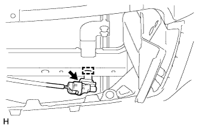

ДАТЧИК ТЕМПЕРАТУРЫ ОКРУЖАЮЩЕГО ВОЗДУХА > СНЯТИЕ |
| 1. СНИМИТЕ ВЕРХНЕЕ УПЛОТНЕНИЕ КРОНШТЕЙНА РАДИАТОРА |
Освободите 13 фиксаторов и снимите верхнее уплотнение кронштейна радиатора.
| 2. СНИМИТЕ РЕШЕТКУ РАДИАТОРА |
Снимите решетку радиатора (Нажмите здесь).
| 3. СНИМИТЕ ТЕРМИСТОР СИСТЕМЫ КОНДИЦИОНИРОВАНИЯ (ДАТЧИК ТЕМПЕРАТУРЫ ОКРУЖАЮЩЕГО ВОЗДУХА) |
|  |
Отсоедините разъем.
С помощью отвертки освободите зажим и снимите датчик.